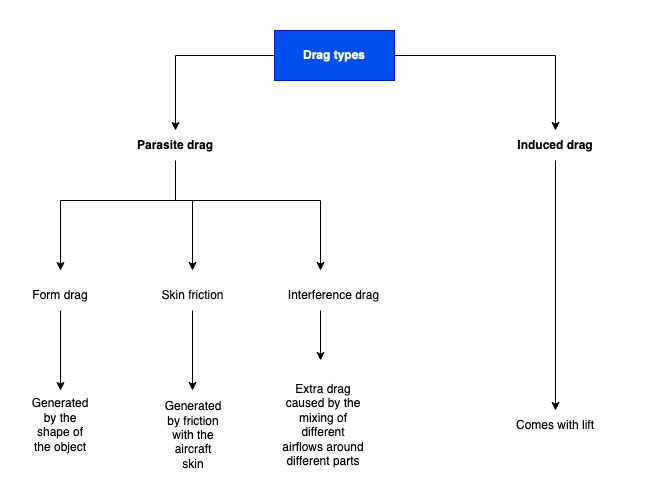
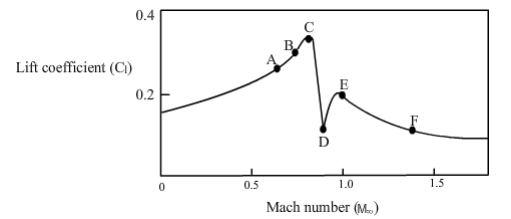

1. Basics, laws and definitions
DEFINITIONS
| Term | Definition | Unit of measurement |
|---|---|---|
| Mass | A physical quantity expressing the amount of matter in a body | kilogram (kg) |
| Density | A substance's mass per unit of volume. | kilograms per cubit metre (kg/m3) |
| Weight | The force acting on the object due to acceleration or gravity. | newton (N) |
| Velocity | The rate at which an object changes its position. | metres per second (m/s) |
| Acceleration | The rate of change of the velocity of an object with respect to time | meters per second squared (m/s²) |
| Temperature | A measure of average kinetic energy per molecule in a substance. It is different from heat, though still related. | kelvin (K) |
| Force | Any action that tends to maintain or alter the motion of a body or to distort it. | newton (N) |
| Pressure | The force applied perpendicular to the surface of an object per unit area over which that force is distributed. | pascal (Pa) |
| Energy | Ability to do work, which is the ability to exert a force causing displacement of an object. | joule (J) |
| Power | The amount of energy transferred or converted per unit time. | watt (W) |
NETWON'S THREE LAWS OF MOTION
| First Law (Inertia) | An object at rest remains at rest, and an object in motion remains in motion at constant speed and in a straight line unless acted on by an unbalanced force |
|---|---|
| Second Law (Force) | The acceleration of an object depends on the mass of the object and the amount of force applied (F = ma) |
| Third Law (Action & Reaction) | Whenever one object exerts a force on a second object, the second object exerts an equal and opposite force on the first. |
AIR DENSITY
· What is air density?
- Air density is the mass of air per cubit metre of it
- It's important since it affects aircraft and engine performance.
- In the Standard Atmosphere, air density is 1'225 kg/m3
STATIC, DYNAMIC AND TOTAL PRESSURE
· Static pressure
- Pressure that a stationary fluid (such as air) has.
- It is called "static" pressure because it does not account for the dynamic effects of fluid motion, such as changes in velocity or acceleration.
- Static pressure is exerted equally on all sides of an object placed in a fluid.
· Dynamic pressure
- Pressure exerted by a fluid due to its motion or velocity.
- Unlike static pressure, which accounts for the pressure at rest, dynamic pressure considers the impact of fluid movement.
- Dynamic pressure is only exerted on the sides "facing" the movement of the object against the fluid.
- Dnamic Pressure (q) = 1/2 ρ V²
- ρ = fluid's density
- v = velocity
· Total pressure
- Total pressure, also known as stagnation pressure or pitot pressure, represents the sum of the static pressure and the dynamic pressure of a fluid flow.
- It is called "total" pressure because it takes into account both the pressure at rest and the pressure due to fluid motion.
- Often measured through a Pitot tube
PRINCIPLE OF CONTINUITY
· The Principle of Continuity
- Energy and mass can not be created, nor destroyed. They can only be changed from one form to another.
- This principle, applied to aerodynamics, involves that the mass flow of air per unit time must remain constant at all times.
- Mass flow is equal to the cross-sectional area (A), airflow velocity (V) and air density (ρ).
- Therefore: A x V x ρ = Constant throughout a tube.
- Note: Density is considered constant and can be disregarded at low speeds (below Mach 0.4)
- Because mass flow must remain constant, if the cross-sectional area of a stream is reduced, its velocity will be inevitably increased.
BERNOULLI'S THEOREM
· Bernoulli's Principle:
- Bernoulli's principle states that the total pressure of an ideal fluid remains constant at all times.
- As a consequence, if the dynamic pressure (speed) is increased, the static pressure of the fluid must necessarily decrease and viceversa.
VENTURI TUBE
· Venturi tube
- The Venturi tube is a practical application of the Bernoulli's theorem.
- As the tube narrows, streamlines become closer, increasing the speed of the air flowing through the tube.
- Density x Area x Velocity = constant throughout the whole tube
- Remember that we consider the air to be of constant density. This means that, if the tube narrows, airflow speed must increase!
APPLICATION OF THE BERNOULLI'S THEOREM IN AVIATION· An aerofoil is a specifically shaped object intended to interact with airflow in a certain way.
|
BASICS OF AIRFLOW
· Steady and unsteady airflow
- A steady flow is one in which the conditions (velocity, pressure and cross-section) may differ from point to point but DO NOT change with time.
- An unsteady flow is one in which, at any point in the fluid, the conditions change with time.
· Streamlines and stream tubes
- Streamlines are field lines that we use to represent and visaulize a fluid flow.
- They differ only when the flow changes with time, that is, when the flow is not steady.
- A streamtube is a collection of streamlines.
LAMINAR, TURBULENT AND FREE STREAM AIRFLOW
· Laminar (streamline) airflow
|
· Turbulent airflow
|
· Free Stream Airflow
- Airflow that is far enough from an aircraft to be unaffected by it.
2. Terminology
WING TERMINOLOGY
· Wing platform terminology:
- Gross Wing Area: Area of the wings from tip to tip, including the portion normally cut out to accommodate the fuselage.
- Net wing area: Area of the wings from root to tip, excluding the fuselage.
- Wing span: Distance from tip to tip
- Mean chord: Average distance between leading edge (LE) and trailing edge (TE)
- Aspect Ratio: Wing span / Wing chord.
- Aspect Ratio: span² / wing area
- Aspect Ratio: wing area / chord²
- Wing loading: Weight / Wing area
- Taper Ratio: tip chord / root chord
- Angle of sweep: Angle between a line at 25% chord, root to tip, and a line perpendicular to the root chord.
- Mean Aerodynamic Chord: Chord of a rectangular wing with same moment and lift.
· Wing section terminology:
- Chord line: A straight line joining LE and TE
- The chord: The actual length of the chord line.
- Mean Camber Line: Line equidistant from top and bottom of the wing.
- Maximum Camber: Maximum distance between chord and camber line, expressed as a percentage in relation to the chord.
- Maximum Thickness: Max distance between upper and lower surfaces
- Maximum Thickness to Chord Ratio: Maximum thickness expressed as a percentage in relation to the chord. Typical subsonic is 12-14%
- Fineness Ratio. Chord/Thickness. Usually between 3 and 4
- Angle of Incidence. Angle between the longitudinal axis and wind chord. It's constant for every aircraft.
- Geometric Washout. Difference of Angle of Attack between wing root and wing tip (usually wing root has a higher AoA in order to stall first)
- Aerodynamic Washout. Difference of thickness between wing root and wing tip.
· Camber
- High camber wings produce higher lift at low airspeeds.
- For flying at high airspeeds, low camber wings are used.
AIRSPEED TERMINOLOGY
· Airspeed definitions:
- IAS: Indicated Air Speed. It's the speed that the instrument reads, related to dynamic pressure.
- CAS: Calibrated Air Speed. It's IAS corrected for position, maneuver and instrument errors.
- EAS: Equivalent Air Speed. CAS corrected for compressibility error. Below 300 knots, compressibility is not taken into account.
- TAS: True Air Speed. EAS corrected for density error.
AIRCRAFT DESIGN TERMINOLOGY
· Dihedral vs anhedral.
- Dihedral. Wing tips are higher than than wing root
- Anhedral. Wing tips are lower than wing root.
ANGLE DEFINITIONS
· Angle definitions:
- Angle of attack: Angle between wing chord and relative airflow
- Angle of incidence: Angle between wing chord and longitudinal axis. Fixed for a given aircraft type.
- Angle of pitch. Angle between longitudinal axis and horizon.
· Note: The Relative airflow is defined as the speed and direction of the air movement past an aerofoil.
- It's equal in size and parallel but opposite in direction to the flight path.
3. Lift - Two dimensional
DEFINITIONS
· Lift is generated when the flow direction of a certain mass of air is changed.
- Lift is always perpendicular to the relative airflow.
- Drag is always parallel to the relative airflow.
THE LIFT FORMULA
· Lift formula
|
· Relationship between IAS, TAS and lift
- Remember that an ASI shows a direct reading of dynamic pressure, in a scale calibrated in knots.
- An ASI showing a constant reading during a climb indicates that dynamic pressure to which an aircraft is subject is constant
- Assuming that all other factors remain unchanged, we can conclude that the magnitude of lift also remains constant.
- Density always decreases with altitude, so Velocity (TAS) has to increase in order to keep Dynamic Pressure constant.
- This is the reason why True Airspeed increases at altitude with constant indicated airspeed.
- Note that if TAS is doubled, lift increases by 4.
COEFFICIENT OF LIFT
· Coefficient of Lift.
- Affected by aerofoil shape and angle of attack, amongst other factors.
- Since the shape of the wing is fixed, any in-flight changes to the CL must be due to a change of the Angle of Attack.
- Maximum Coefficient of Lift (CLMax) is reached at the Critical Angle of Attack. Further increasing AoA will reduce the resulting CL.
FACTORS AFFECTING COEFFICIENT OF LIFT
· Wing camber
· Wing thickness
- A thicker airfoil will have a higher critical angle of attack compared to a thinner airfoil.
- This is because the thicker airfoil can generate more lift before reaching its critical angle of attack, which is the angle at which the airflow over the airfoil's upper surface becomes turbulent and separates, causing a significant decrease in lift and an increase in drag.
- Thinner airfoils tend to reach their critical angle of attack at lower angles due to their reduced ability to generate lift at higher angles of attack.
· Aspect ratio
- Higher aspect ratio reduces wing tip vortices, increasing effective angle of attack, and increasing resulting lift.
- High aspect ratio aerofoils stall at a lower angle of attack than the equivalent low aspect ratio aerofoil.
· Wing sweepback
- Sweptback wings reduce lift, but they delay critical Angle of Attack.
- Sweptback wings cause a portion of the airflow to flow parallel to the leading edge, which doesn't produce lift. They are optimized for high speeds.
· Reynolds Number
- A large Reynolds Number involves more lift. Note that Reynolds Number is an indication of how turbulent the airflow is.
· High lift devices
- Specific effect depends on the type of high lift device being used
- It will be studied later on
CHORDWISE PRESSURE DISTRIBUTION
· Chordwise pressure distribution.
- Two main sections
- Positive Pressure Gradient (first section).
- Air flows from a high static pressure area to a low static pressure area.
- Following the airflow, velocity increases and static pressure decreases.
- This is the natural flow of air, thus, air follows this gradient easily.
- Adverse Pressure Gradient (second section).
- This gradient goes against the natural flow of air.
- Along the chord, air velocity reduces and static pressure increases.
- Air must have high energy in order to continue flowing against and adverse gradient.
- Once energy falls below a given threshold, airflow separates from the aerofoil.
- Positive Pressure Gradient (first section).
· Effect of angle of attack on pressure distribution
- Increasing Angle of Attack moves the point of maximum velocity (and minimum static pressure) forward.
- Increasing Angle of Attack increases the pressure differential affecting the wind, thus, increasing lift.
STAGNATION POINT
· What is the stagnation point?
- The stagnation point is defined as the point of maximum static pressure.
- At the stagnation point, dynamic pressure is null. The air is purely static.
· How do variations of the angle of attack affect the stagnation point?
- The stagnation point moves downwards at increasing angle of attack.
CENTRE OF PRESSURE
· What is the Centre of Pressure?
- The Centre of Pressure is the point where we consider lift to act upon.
· How do variations of the angle of attack affect the centre of pressure?
- On asymmetrical aerofoils, the CP moves forward with increasing AoA.
- On symmetrical aerofoils, the CP does not move.
· Because the position of the Centre of Pressure changes with changes in the angle of attack, it's difficult to calculate the pitching movement at different airspeeds
AERODYNAMIC CENTRE
· Aerodynamic Centre
- It's the location at which the aerodynamic moment remains constant regardless of the Angle of Attack.
- This allows for easy calculations. Used for engineering and stability calculations mainly.
- On positively cambered wings, Aerodynamic Centre is situated at about 25% chord from LE.
MOMENTUM
· Conservation of momentum
- Momentum is always constant
- Momentum = Lift x Distance (CP - AC)
- Therefore, if angle of attack increases, lift increases, and the Centre of Pressure gets closer to the Aerodynamic Centre.
BOUNDARY LAYER
· Boundary layer
- The boundary layer is the region in which flow adjusts from zero velocity in contact with the wing to a maximum velocity in the main stream of the flow
- Boundary layer can be laminar or turbulent, and attached or separated
- Laminar boundary layers generate less drag, but are more prone to separating
- Turbulent boundary layers generate more drag, but are more resistant to separation
- A boundary layer is said to be attached if in contact with the wing
- Separated boundary layers don't generate lift. When wing is pretty much covered in a separated boundary layer, the aircraft is said to be stalled.
· Transition point
- Point (or zone) at which the boundary layer turns from laminar to turbulent.
- Transition point moves forward with increasing angle of attack.
· Separation point
- Point at which the boundary layer separates from the upper surface of the wing
- Separation point moves forward with increasing angle of attack
TRANSPORT AIRCRAFT AEROFOIL CHARACTERISTICS
· Aerofoils used for general aviation and transport aircraft are, mostly, asymmetrical, with a positive camber.
- Because of the positive camber, positive lift is generated at 0º angle of attack.
- The zero-lift-angle of attack corresponds to -4º approximately.
- Critical Angle of Attack occurs around 14 - 16º, depending on the aerofoil characteristics and altitude (compressibility) effects. Further increasing the Angle of Attack produces a stall.
- Critical peak is around 16º AoA, depending on the aerofoil. Stall typically occurs from here.
4. Lift - Three dimensional
THREE-DIMENSIONAL AIRFLOW
· Three-dimensional airflow takes into account the span-wise flow generated by pressure differential on top and below the wing.
WINGTIP VORTICES· What are wingitp vortices?
· What causes wingtip vortices?
|
· Downwash and upwash.
- As a result of vortices, a downwash is generated within the aircraft's wingspan, whereas an outwash is generated outside of the aircraft's wingspan.
RESULTING FORCE DIAGRAM
· Induced and effective angle of attack
- Downwash creates an "Induced Angle of Attack", which doesn't generate lift but induced drag.
- Downwash reduces the Effective Angle of Attack, thus reducing the amount of lift being generated by the wing.
· Total reaction
- The resultant force of the wing with the air is known as "Total Reaction", which is perpendicular to the Effective Airflow
- Because it's tilted backwards, we can further divide the total reaction into two vectors:
- Lift, perpendicular to the relative airflow (as always)
- Induced drag, parallel to the relative airflow (as always)
- The additional drag component created is known as induced drag.
LIFT DISTRIBUTION
· Spanwise lift distribution
|
· Side effects of increasing the size of vortices
- Effective Angle of Attack is reduced
- Lift is decreased
- Drag is increased due to the appearance of induced drag
- Downwash is increased
- Because lift is initially decreased, we know have to increase the angle of attack to counter this effect, which leads to more vortices.
- Fuel consumption is increased
· Wing shape, effect of vortices and spanwise lift
|
WAKE TURBULENCE
· What is wake turbulence?
- Wake turbulence is the name we give to the formation of two counter-rotating vortices trailing behind the aircraft.
- Wake turbulence from the generating aircraft can affect encountering aircraft due to the strength, duration, and direction of the vortices.
- Wake vortices exist on all types of aircraft.
· Factors affecting the severity of wake turbulence
- Gross weight. High weight means that wings must generate more lift. This is done through more angle of angle of attack, increasing the severity of wake turbulence.
- Wingspan. Influences the prxoximity of the two trailing vortices.
- Airspeed. Low airspeed involves high angle of attack, increasing the severity of wake turbulence.
- Configuration. For the same speed, a clean aircraft requires more angle of attack, increasing severity of wake turbulence.
· Evolution of trailing vortices
- In still air, trailing vortices tend to descend and separate laterally from each other.
- During light crosswind conditions, close to the ground, wind may blow one of the wing tip vortices towards the runway centreline, affecting following aircraft.
- En-route, wing-tip vortices generally take 1-2 minutes to descend 1000 ft, where they become dissipated.
5. Drag
TYPES OF DRAG

· Types of drag
- Parasite drag. Directly proportional to IAS². If IAS doubles, Parasite drag quadruples.
- Form Drag. Depends on the thickness of the airframe and the impact of the airflow on it. Increases with non-aerodynamic surfaces.
- Skin Friction Drag. Air near aircraft surfaces has a lower speed, which makes the airflow brake. Increases with turbulent air.
- Interference Drag. Air hits landing gear, etc. Air from different flows mix. Smooth junctions are used to decrease this.
- Induced drag. It's an effect of lift. More vortex, more induced drag.
- Note: Form drag and skin friction drag can be grouped into "Profile Drag"
· Form or pressure drag
- When an object is not aerodynamic, it generates a lot of turbulence behind, which involves a lot of drag
- For the same thickness, a longer object will produce less turbulent airflow.
- Therefore, a higher fineness ratio will produce less form drag.
· Skin friction drag
- At the surface of a wing, air particles adhere to it and have zero relative velocity
- As other layers of air flow over this surface, they are slowed down due to friction with the "static"
- The reaction to retardation of the airflow is known as skin friction, and it will try to drag the surface along with the airflow.
- The layer where this retardation occurs is located between the wing surface and free stream air, and is known as the Boundary Layer.
- Boundary layer increases in thickness as you move rearwards over an aircraft wing.
- A turbulent Boundary Layer creates more skin friction drag than a laminar layer.
- The change from laminar to turbulent airflow is called the transition point.
· Interference drag
- In real life, the total drag generated by wing and aircraft fuselage together is bigger than the drag generated by wing (alone) and the fuselage (alone)
- This "extra" drag is produced by the mixing of different airflows surrounding different parts of the aircraft
- Mainly occurs between wing and fuselage
- Wheel fairings are an attempt to reduce interference drag for example
· Induced drag
- A consequence of generating lift.
- This drag is produced by wingtip vortices. Anything that increases the strength of vortices will increase induced drag and viceversa
- Inversely proportional to IAS². If IAS is doubled, induced drag reduces by 4.
- As speed increases, CL decreases due to lower AoA, and Cdi (Coefficient of induced drag) decreases.
- Cdi is proportional to CL². This means that, if coefficient of lift is reduced by a factor of 2, Cdi is reduced by a factor of 4.
- Di = (1/2) d v² s Cdi
- Induced drag can be reduced by tapering, wing tip modifications and washout (lower AoA at wing tip)
· Induced drag is maximum during takeoff, where low airspeeds require a high Angle of Attack.
THE DRAG CURVE
· Total drag curve
- Parasite drag is proportional to IAS²
- Induced drag is inversely proportional to IAS²
- When total drag is least, induced drag is equal to parasite drag
· Total drag
- Drag = (1/2) ρ v² s CD
FACTORS AFFECTING DRAG
· Altitude
- We can see from the formula that drag increases with dynamic pressure (IAS)
- If we maintain constant IAS, S and CD, drag remains the same
- At higher altitude, a given IAS means increased TAS, so you can fly faster for the same total drag
- This is because Vmd occurs at a constant Indicated Airspeed (IAS). However, as we climb at constant IAS, TAS increases, flying faster for the same drag!
- This shifts total drag curve to the right if the airspeed reference is given in terms of TAS
· Drag and weight
- An increase in weight increases total drag and Vmd (minimum drag speed)
- In order to maintain the same Angle of Attack, airspeed must increase with increasing weight to maintain level flight.
- Note that the optimal angle of attack remains the same regardless of weight (around 4º)
· Drag and High Lift Devices
- High lift devices increase parasite (and total) drag and reduce Vmd
- While using flaps, induced drag decreases slightly but the increase in parasite drag is more noticable.
LIFT TO DRAG RATIO
What is the lift to drag ratio?
- The lift to drag ratio is the relationship between the lift and drag that a wing generates.
- It's highly important since a high lift to drag ratio means high wing efficiency.
· Lift to drag ratio and angle of attack
- The lift to drag ratio changes with changes in the angle of attack.
- The angle of attack at which maximum lift to drag ratio occurs is called optimum angle of attack, and generally lays around 3-4º.
· Lift to drag ratio
- Lift = (1/2) ρ v² s CL
- Drag = (1/2) ρ v² s CD
- We can conclude that L/D = CL/CD
· Effect of weight on lift to drag ratio
- Increased weight moves the total drag curve upwards and towards the right.
- This means that our new Vmd will be slightly higher.
- However, as long as we correct the airspeed and maintain our new Vmd, the lift to drag ratio will remain constant.
- Lift to drag ratio is, therefore, independent of the weight of the aircraft.
- In the event of engine failure, the aircraft will be able to glide the same distance no matter what the weight is (as long as it maintains the corrected Vmd for the weight)
· Effect of high lift devices
- Using high lift devices increases the amount of lift generated by a wing, but it increases the drag even more in comparison.
- Therefore, using high lift devices reduces the lift to drag ratio (reducing efficiency)
6. Ground Effect
PRINCIPLE· Ground effect
|
· Low wing aircraft suffer more ground effect that high wing aircraft.
INFLUENCE DURING CRITICAL PHASES
· Influence on landing
- Sudden increase in lift and reduction in drag, creating a floating tendency (ballooning)
- Aircraft pitches down due to reduction in downwash hitting the tailplane.
· Influence on takeoff
- Sudden decrease of lift and increase in drag. Vortices will rapidly grow.
- When leaving ground effect, aircraft will pitch up due to the increased downwash hitting the tailplane
· Influence on stall angle of attack
- When flying in ground effect, airflow separation will occurs at a smaller angle of attack.
7. Stall
INTRODUCTION
· Stall is a condition of flight at which the aircraft can not generate enough lift to maintain altitude
- Stall occurs when a given angle of attack is exceeded.
- This is known as the Critical Angle of Attack
- Beyond the critical AoA, if we continue increasing the AoA, lift will decrease
- During stalled flight, drag increases exponentially
· The stall speed can be calcuated through the lift formula
MECHANICS OF THE STALL
· Stall occurs at a given angle of attack and onwards. At this point
- The upper surface is predominantly covered in separated airflow
- A very steep adverse pressure gradient exists, which helps on airflow separation and reverse airflow
FACTORS INFLUENCING STALL
· Centre of gravity
- A forward centre of gravity increases stall speed
- This is because the tailplane has to compensate by creating downforce
- This downforce is added as apparent weight
- Lift now has to be equal to aircraft weight + apparent weight created by tailplane
· Thrust component
- If airplane pitch is positive, increasing forward thrust creates a force that balances a portion of the aircraft's weight
- This reduces load factor required to maintain straight and level flight, which, in turns, reduces required lift, thus, reducing stall speed.
· Propeller's slipstream
- If the aircraft propeller is located at the front of the wings, it's slipstream helps generate lift at low speeds
- If throttle setting is suddenly reduced, slipstream is lost and air flowing over the wings is slower, reducing lift
- Since the slipstream helps generate lift, it reduces the stall speed
· Wing loading
|
· Turning
|
· Aircraft weight
|
· Aircraft configuration
- Leading edge slats. The slot re-energizes the boundary layer, so wing stall is delayed to a higher AoA.
- Leading edge flaps. They increase critical angle of attack
- Trailing edge flaps. They reduce critical angle of attack
- Landing gear. An extended landing gear creates a pitching down moment that the tailplane has to counteract. This acts as apparent weight, and more lift is required. Not very noticeable however.
· Airframe contamination
- Critical AoA is reduced if the wing is covered in ice / slush or even big water droplets
- Effect is more pronounced with ice than with frost / rain
- CLMax is decreased and stall speed increases as a consequence
· Angle of sweep
- Sweptback wings are less efficient at generating lift at low airspeeds
- This is because sweep reduces the effective airflow component going over the wing
- As a consequence, stall speed is increased
· Compressibility
- At high altitudes, for a given IAS, tas and mach number are significantly increased
- Compressibility starts taking place at speeds above M 0.4, increasing stall speed.
EFFECT OF WING SECTION ON SPANWISE STALL DEVELOPMENT
· Introduction
- Wings stall first at local points where Local Coefficient of lift / Total Coefficient of Lift is greatest
· Elliptical wings
- Stall begins at the Trailing Edge and progresses uniformly throughout the wing span.
- Lacks a natural advance warning (buffet)
- Ailerons may lack effectiveness
· Rectangular wings
- Root stalls first
- Aircraft tends to gose nose down as the centre of pressure shifts backwards.
· Tapered wings
- Medium taper: Stall starts at mid-span and progresses both towards tip and root.
- High taper: Tip stalls first and stall spreads inwards
· Sweptback wings
- Stall occurs first at wingtips
- Since the forwardmost part of the wing is unstalled, a pitch-up moment is created
- Wings are generally designed with an aerodynamic downwash (lower angle of incidence at wingtips) to prevent tip stall.
ALLEVIATING WINGTIP STALL
· Why is it important to alleviate wingtip stall?
- Wingtips are, generally, where ailerons are located
- To maintain control of the aircraft, wings are designed to stall first at the wing root, so unseparated air flows through the ailerons.
- Otherwise, wing tip would stall first, losing aileron effectiveness.
· Devices to Alleviate Tip Stalling
- Stall inducer strips. They induce stall at wing root
- Washout (either geometric or aerodynamic). They make the wing root stall sooner than wing tips
- Wing fences. They restrict the outwards flow of the boundary layer at the upper surface
- Vortilons. They restrict the outwards flow of the air below the wing
- Saw Teeth. They create a high energy vortex along the chord at high angles of attack, which re-energyzes the Boundary Layer
- Vortex Generators. They delay separation of the Boundary Layer
STALL SENSING AND WARNING
· Light aircraft
- Achieved through stall warning devices
- They usually consist of either:
- A vane around the Leading Edge of the wing, which is pushed upwards if stagnation point gets too low.
- A mechanism that directs airflow through a whistle, making noise, similar to a reed instrument
- Stall warner must act at 5% CAS or 5kt above stall airspeed (the greatest)
· Transport Category Aircraft
- Angle of attack is measured by probes or vanes specifically designed for that purpose
- As the Angle of Attack increases, the Air Data Computer generates a warning
- Stall is generally warned by stick shaker + aural + visual alerts
OTHER TYPES OF STALL
· Deep stall
- Aircraft combining T-tail and sweptback wings have a tendency to deep stall
- Deep stall happens when the elevator lacks effectiveness to command a pitch-down moment, resulting in an unrecoverable stall.
- Not a problem on aircraft with a low tailplane design because tailplane is not hit by turbulent airflow
- During a stall, low tailplanes maintain effectiveness because turbulent air is flowing above it.
- In order to prevent this, T-tail aircraft (high tailplanes) are required to carry a stick pusher that automatically lower the nose to prevent the stall from developing.
· Accelerated or G-Stall
- Happens when an aircraft stalls due to a Load Factor higher than 1.
· Spinning
- Is a condition of stalled flight in which an aircraft describes a downward spiral path.
- During a spin, one wing is more stalled than the other, and yawing moment can increase the difference in lift and drag between both wings.
- During a spin, weight equals drag and lift equals centrifugal force.
- Phases of the spin
- Entry. Accidentally or on purpose, pilot provides necessary elements for spin
- Incipient. Typically involves one or two 360º turns. Transition between a stall and a spin
- Developed. Airspeed, rotational speed, descent rate and angle of bank are very stable.
- Recovery. Stick centered, opposite rudder, wait a bit and you are out of the spin!
- A forward centre of gravity results in a steeper spin, which are easier to recover
- Be careful: flat spins and unrecoverable since pilot has no authority over the rudder
STALL RECOVERY
· General guidelines to recovering from a stall:
- Let the nose drop to reduce angle of attack.
- Reduce angle of bank
- Add power as needed
- Smoothly return to the desired flight path, avoiding secondary stalls
8. Propellers
INTRODUCTION
· Propellers
- They convert power output from the engine into thrust
- Direction of rotation is determined as seen from the cockpit.
· Definitions
- RPM line or plane of rotation: Plane perpendicular to the crankshaft
- Blade Angle: Angle between chord line and RPM line
- Angle of Attack: Angle between chord line and relative airflow.
- Propeller Geometric Pitch: Theoretical distance that a propeller moves forward in a 360º rotation
- Propeller Effective Pitch: Actual distance that a propeller moves forward in a 360º rotation
- Propeller Slip: Difference between geometric and effective pitch.
PROPELLER CONSTRUCTION
· Types of propellers
- Fixed Pitch Propeller (blade angle is fixed)
- Two Pitch Propeller (you can either set blade angle to fine or coarse)
- Adjustable Pitch Propeller. Can be set on the ground mechanically before flight
- Constant Speed Propeller. Blade angle can be changed in flight.
· Propeller blade twist
- Blades are twisted along their length to maintain a constant Angle of Attack throughout the whole blade
- Decreasing chord and depth of section from root to tip
- Blade angle is coarse at the root and fine at the tips.
Optimum blade Angle of Attack: 2-4º
PROPELLER AERODYNAMICS
· Thrust distribution
- Although AoA is constant throughout the blades, speed of the tips is greater that the speed at the root, therefore, more thrust is created as we advance from root to tip.
- Tip vortices, however, decrease the thrust at the tip.
- Reference pitch is where maximum thrust occurs. This is at 70% of tip radius
- The most effective area of the propeller blade for producing thrust is around 60-90%
· Total reaction
- Propeller torque: Force acting parallel to the plane of rotation. It opposes engine torque.
- Thrust: Parallel to direction of flight.
· Effect of changing throttle setting on propeller AoA
- When opening throttle, RPM increases, while TAS remains constant. Therefore, AoA increases.
- When closing throttle, RPM decreases, while TAS remains constant. Therefore, AoA decreases.
· Propeller Efficiency
- Propeller Efficiency = Thrust Power / Shaft Power
- Propeller Efficiency = Thrust x TAS / Torque x RPM
FORCES ACTING ON A PROPELLER
· Forces acting on a propeller
- Centrifugal forces trying to pull the blades out of the hub.
- Thrust bending forces try to bend blades forward at the tips.
- Torque bending forces bend the blades in the direction opposite to rotation
- Aerodynamic Turning Moment, tends to increase blade angle.
- Centrifugal Turning Moment, tends to decrease blade angle.
POWER ABSORPTION
· Power absorption
- It's the ability of a propeller to absorb an engine's power output.
- Affected by:
- Blade size
- Blade section (increase camber increases thrust)
- Blade Angle
- Number of blades (more blades, more power absorption)
- Increasing the number of blades increases the power, but reduces efficiency.
- Increasing the number of blades decreases the noise of the propeller.
EMERGENCIES & SAFETY MEASURES
· Windmilling propeller
- Propeller driven by wind instead of engine
- RPM decrease while TAS remains constant
- Angle of Attack decreases and becomes negative
- P torque now acts in plane of rotation and assists rotation
- Drag opposes motion and has a decelerating effect
· Feathering propeller
- In order to reduce drag from a windmilling propeller, the propeller is set to max coarse setting.
- A windmilling propeller has the highest drag
- A feathered propeller has the lowest drag
PROPELLER OPERATION
· Optimal AoA
- During take-off, a fine pitch is preferable to maintain the optimal AoA
- During cruise, a coarse pitch is preferable to maintain the optional AoA
- Fixed Pitch Propellers are usually built to operate at coarse setting. This prevents windmilling propeller when transitioning from takeoff to cruise.
· Fixed pitch propeller
- Throttle controls RPM
· Constant Speed Propellers
- Throttle controls Manifold Air Pressure
- Propeller Lever controls Blade angle
- Optimal AoA can be maintained at all stages of flight by changing Blade Angle.
- Governor / Constant Speed Unit detects changes in RPM and corrects propeller torque using pitch to get desired RPM.
- A negative angle of attack can be set, which will result in reverse thrust.
ADVERSE CONDITIONS
· Propeller fatigue
- Vibrations in the blade can lead to the creation of standing "wave patterns"
- These can cause metal fatigue and lead to structural failure
· Propeller icing: Ice is more likely to build up on the hub due to lower rotational velocity.
SIDE EFFECTS FROM THE PROPELLER
· Propeller Slipstream.
- A clockwise propeller will experience a left yaw.
· Torque reaction.
- With a clockwise propeller, the airframe will be twisted anti-clockwise and viceversa.
· Gyroscopic Effect.
- Gyroscopic precession causes a nose left movement on a clockwise prop during rotation.
· Asymmetric Blade Effect (P factor)
- The downgoing blade produces more thrust than the upgoing blade.
- This is because longitudinal axis of an aircraft is tilted upwards, and downgoing blade travels a greater distance due to that tilt.
- A clockwise rotating propeller has a left yawing tendency.
- Effect increases with an increase in AoA and RPM.
9. Primary Flight Controls
INTRODUCTION
· Primary and secondary flight controls
- Primary flight controls directly control attitude of the aircraft (elevators, ailerons, rudder)
- Secondary flight controls are used to adjust the handling characteristics of the aircraft to different phases of flight (spoilers, flaps, slats)
PRIMARY FLIGHT CONTROLS
· Elevators
- Used to control pitch
- The tailplane consists of a stabilizer and elevator
- When pushing or pulling the yoke, elevators are moved, changing the camber of the tail.
- If the whole tailplane moves, it is known as stabilator.
· Ailerons
- Upgoing wing has more lift, therefore, more induced drag.
- Therefore, rolling creates a yawing moment, known as Adverse Aileron Yaw.
- On some aircraft, outboard ailerons are only used at low airspeeds to prevent overstressing the aircraft
· Rudder
- Rudder deflects providing directional control.
- When yawing, one wing goes faster than the other one, producing more lift.
- This creates a rolling moment as a secondary effect.
ADVERSE YAW COMPENSATION
· Adverse Aileron Yaw compensation
- Frise ailerons: leading edge of the aileron on the downgoing wing is exposed beneath the wing, creating extra form drag that balances the induced drag of the upgoing wing.
- Differential Ailerons: Downgoing wing aileron deflects more, creating an extra form drag that balances the induced drag of the upgoing wing.
- Rudder coupled ailerons: Rudder is deflected automatically to provide a coordinated turn
- Spoilers / speed brakes: Downgoing wing extends spoilers to increase parasite drag.
AERODYNAMIC BALANCE
· Aerodynamic Balance
- Aerodynamic Balance is about managing stick forces for reversible controls
- Whenever a control surface is deflected, a hinge moment is produced
- If the hinge moment becomes too great, deflection can be difficult and stick forces too high
· Options for aerodynamic balancing:
- Inset hinge
- Hinge line brought nearer to Centre or Pressure, reducing hinge moment and decreasing stick forces.
- Horn Balance
- A horn at the surface's leading edge is deflected into the airflow, assisting the intended deflection and reducing stick forces
- Internal balance
- Two vented components. Pressure differential on both components help to decrease stick forces.
- Balance tab
- Acts in the opposite direction of control surface deflection. It decreases control surface effectiveness
- Anti-balance tab
- Acts in the same direction of control surface deflection. It increases stick forces and effectiveness, used to prevent overcontrol.
- Servo Tab
- Pilot deflects a small surface which ends up deflecting the main control surface. The servo tab acts in opposite direction to the control surface.
- Effectiveness and stick forces are reduced
- If the elevator becomes jammed, reduced inverted controls are possible
- Low effectiveness at low speeds
- Spring servo tab
- Effectiveness increased at low speeds
MASS BALANCING
· Flutter
- Consists on high frequency oscillations of an aircraft control surface due to interaction between aerodynamic forces, elasticity and momentums.
- There are means to prevent this from happening in flight unless you operate outside of the flight envelope
· Mass balancing
- Weight is added forward of the hinge line. By doing this, if any unexpected gust happens, the control surfaces will naturally tend to revert the aircraft to stable flight, reducing flutter.
- All control surfaces are prevented from fluttering, including tabs.
POWERED FLIGHT CONTROLS
· Hydraulically powered flight controls
- Also known as "irreversible flight controls", since no feedback occurs from control surfaces to stick.
- Force is applied to a servo valve. Because no feedback is provided, there's risk of overstressing the aircraft.
- Stick forces are artificially increased with a combined spring and Q feel unit (dynamic pressure feedback) to prevent overstressing.
- A self centering mechanism is also provided, so flight controls come back to neutral position after releasing them.
· Fly by wire systems
- Also irreversible
- No need for a spring and Q-feel unit since the computer logic will prevent the pilot from overstressing the aircraft
HIGH SPEED CONTROL
· Some aircraft implement logic systems that govern how many control surfaces are deflected according to the airspeed.
- For example, during cruise flight, only the inner ailerons are typically required. Using the outer ailerons can overstress the aircraft
· Rudder control: Many aircraft have a gear change or ratio system to restrict rudder deflection and prevent overstress at high speeds.
10. Secondary Flight Controls
· Secondary Flight Controls affect lift, drag and stick forces.
TRIM
· Trimming system
- Designed to reduce stick forces to zero, and maintain attitude without pilot interaction.
- Aircraft are usually fitted with elevator and rudder trim. Transport Category Aircraft can have aileron trim as well.
- This is not the same as aerodynamic balance, which consists on managing stick forces.
- Trim tab:
- Used on reversible controls including power assisted controls
- Completely controlled by the pilot by the trim wheel
- Deflected in opposite sense to the control surface
- Trim tab creates a hinge moment that equals the moment resulting from the control surface deflection
- Trim tabs are not required on hydraulically powered flight controls
- Combined trim and anti-balance tab can be used as a trim and to increase stick force at the same time.
LIFT AUGMENTATION
SLATS
· Leading edge slats
|
FLAPS
· Leading edge flaps
- They increase stall AoA a bit less than slats
- They increase CL at all angles of attack
- Usually located between fuselage and engine
- They increase wing camber
- 2 main types:
- Droop Flaps: The whole leading edge of the wing moves down
- Krueger Flaps: A portion of the lower wing is rotated out in front of the main wing leading edge. The main wing upper surface remains unchanged.
· Trailing edge flaps
- They produce a significant increase in Coefficient of Lift, thus reducing stall speed
- They increase Effective Angle of Attack
- Critical Angle of Attack is reduced
- Deployment of flaps moves the Centre of Pressure backwards, increasing pitch down moment.
- Downwash is increased. If the downwash hits the stabilizer, it creates a pitch-up moment. This is not applicable for high tailplanes.
- Types:
- Plain Flap: Simple hinged portion of the trailing edge that rotates
- Split Flap: It doesn't alter the upper surface, delaying the separation of the boundary layer. Critical Angle of Attack is increased.
- Slotted Flap: Has a slot, which increases lift performance
- Fowler Flap: First moves back, then downwards. It increases the surface and the camber of the wing.
- Double Slotted Fowler Flap provides additional re-energizing of the Boundary Layer.
· Effect of flaps on the polar diagram
- Lift to drag ratio is reduced, so horizontal distance covered in case of all engines failure will be less
- Lift is increased, but drag is increased a lot more.
· Protection
- Asymmetric flap / slat deployment can occur due to malfunction of the actuating system.
- If aircraft computer detects any asymmetry, it flaps or slats will remain locked at their current position.
SUMMARY
SPOILERS / SPEDBRAKES
· Spoilers
- Spoiler usage reduces lift and increases drag.
- Operation modes:
- Speedbrakes: Operated symmetrically during flight, increasing rate of descent and descent gradient
- Roll spoilers: Used asymmetrically to assist the ailerons. They are deployed on the downgoing wing.
- Ground Spoilers / Lift dumpers: Symmetrically operated with max deployment.
- Because parasite drag increases, Vmd will decrease when spoilers are deployed.
11. Forces in straight and level flight
· Definitions
- Steady: Speed is constant
- Straight: Constant heading
- Level: Constant altitude
· Force balances
- Lift = Weight (+ Download from the tailplane)
- Thrust = Drag
· Trim drag
- The download from the plane acts as extra weight
- This force has to be countered by lift, increasing induced drag
- This extra induced drag is known as trim drag
- As Centre of Gravity moves forward, momentum increases, therefore, more downward force is needed to balance the momentum. This results in an increase in trim drag.
· Load Factor
- Load Factor = Lift / Weight
- In straight and level flight, the load factor is 1.
· Specific range (jet)
- Specific range is the amount of miles that can be travelled with a kilogram of fuel
- SR = NM / kg of fuel
- SR = TAS / (Drag x Specific Fuel Consumption)
· Specific Range (Propeller)
- Specific Range = TAS / (Power Required x Specific Fuel Consumption)
· Best endurance
- Best endurance is found when the fuel consumption is least
- For a jet aircraft, this is Vmd
- For a piston aircraft, this is at Vmp
· Best specific range
- It's a function of aerodynamic efficiency
- For a jet aircraft, this is achieved at best TAS / Drag ratio, which occurs at the tangent to the drag curve. This is approximately 1'32 x Vmd
- For a piston aircraft, this is achieved at the best TAS / Power Required ratio, which is approximately Vmd
- Note that best range speed is always greater than best endurance speed.
12. Climb
CLIMBING

· Forces during a climb
- L = W cos γ
- L/W = cos γ
- Load factor is less than 1
- This is because a portion of weight is balanced by the upwards tilt of thrust.
- Thrust is greater than drag.
- A component of the thrust balances the drag.
- The remaining excess of thrust is what allows the aircraft to climb.
CLIMB ANGLE
· Climb angle
· The climb angle has some relationship with climb gradient
|
RATE OF CLIMB
· Rate of climb
- The rate of climb depends on excess power and weight
- Maximum rate of climb occurs when an aircraft is flown at maximum excess power
- The speed that provides a maximum rate of climb is known as "Vy".
- Used to get to cruise altitude as quickly as possible.
- For piston aircraft, this is close to Vmd
- For jet aircraft, this is approximately at 1'32 Vmd.
- Notes:
- Power = Thrust * TAS
- Vy is always greater than Vx
FACTORS AFFECTING CLIMB PERFORMANCE
· Altitude
- As altitude increases, air density and pressure are reduced, and so does available thrust
- Because excess thrust and power are less, climb angle and rate are reduced
· Weight
- The bigger the weight, the less the angle and the rate of climb.
· Wind
- Headwind increases climb gradient
- Tailwind decreases climb gradient
- Wind has no effect, however, on the rate of climb, which depends purely on T, D and W.
· Aircraft configuration
- Flying with landing gear or flaps extended increases drag, which reduces climb angle and rate of climb.
AIRCRAFT CEILING DEFINITIONS (PERFORMANCE-WISE)
· Absolute Ceiling: When rate of climb is 0 ft/min
· Service Ceiling: Provides a safety margin from absolute ceiling
- For propellers, it's the speed at which you you have a ROC of 100 ft/min
- For jets, it's the speed at which you have a ROC of 500 ft / min
13. Descent
· Forces
- Lift is less than weight, therefore, load factor is less than 1
· Descent gradient
- Descent gradient depends on excess drag (D - T)
- Descent gradient (%) = [(D - T) / W] * 100%
· Glide ratio
- Best glide ratio occurs when Lift / Drag is max
- Therefore, best gliding range is achieved at Vmd
- Glide Ratio = L / D = Range / Initial Height
- Effect of weight on glide ratio
- Increased weight means that Vmd is higher, therefore, best Gliding Range will be achieved at a higher airspeed
- However, glide range distance is the same for all weights, because L/D ratio is constant.
- If weight is increased, Vmd is increased, so the time taken to reach the ground will be less, but the achievable distance is the same.
14. Turning
INTRODUCTION
· Forces involved in a turn
· Load Factor
|
· Stall Speed during turns
- Stall speed at turn = Stall speed level x √ (1 / cos Φ)
- Stall speed at turn = Stall speed level x √ (LoadFactor)
TURN MECHANICS
· Turn radius
- Radius = TAS² / (Gravity * tan Φ)
- Be aware that gravity is 10 m/s² and TAS must be converted to m/s
- Effect of mass on turn radius:
- It can be seen from the formula that changes of aircraft mass don't affect the turn radius for a given airspeed.
- However, minimum turn radius is increased with an increase in mass.
- This is because minimum turn radius occurs just above stall speed. For a higher weight, a higher minimum TAS is required to avoid stall.
· Rate of turn
- Rate of turn = TAS / Radius
- Increasing speed requires an increase in bank angle to maintain rate of turn.
- Standard rates are expressed:
- Rate 1 is 3º per second (180º per minute)
- Rate 2 is 6º per second (360º per minute)
CLIMB, LEVEL AND DESCENT TUNS
· Overbanking and underbanking
- In a turn at constant altitude, there is a tendency to overbank, since the outer wing travels faster and produces more lift
- During a climb, there is a tendency to overbank. This is because outer wing has greater AoA
- During a descent, there is a tendency to underbank. This is because outer wing has greater AoA
15. Stability
· Stability is defined as the tendency of an aircraft to go back to its previous state without pilot assistance.
· A disturbance is anything that tries to take the aircraft out of its trim position.
· Types of stability
- Static stability. Immediate reaction of a body, right after disturbance
- Dynamic stability. Subsequent reaction of a body over time.
· Static stability can be:
- Positive: the body returns to its previous position
- Neutral: the body stays at its new position
- Negative: the body continues to divert from its original state
· Dynamic stability can be:
- Positive: the oscillation is reduced over time
- Neutral: the oscillation is the same
- Negative: the oscillation increases with time.
· Maneuverability: is the ability of the aircraft to respond to control surface displacement and achieve the desired condition of the flight.
- Maneuverability is opposite to stability
- A balance between stability and maneuverability must be accomplished in order to ensure safety and control authority.
· Stability types in relation to the axis:
- Longitudinal stability around the lateral axis.
- Lateral stability around the longitudinal axis.
- Directional stability around the yaw axis.
LONGITUDINAL STABILITY
· Longitudinal static stability
- Horizontal Stabilizer is the main responsible structure
- If a disturbance increases the pitch of the aircraft, the horizontal stabilizer gets aligned with the relative airflow, reducing the pitch up moment that it produces. Without this pitch up moment, the nose will drop to where it was.
- A forward Centre of Gravity means that the pitch-down momentum is increased. Thus, increasing longitudinal stability.
- Neutral point is the point at which Centre of Gravity position results in neutral static stability. This is the Aerodynamic Centre of the aircraft.
- GC is kept ahead of the AC for safety reasons. The distance between the most afterward CG possible and neutral point is called static margin.
- Centre of Pressure Position
- Centre of Pressure must be afterward of Centre of Gravity.
- Tailplane design: any factor leading to an increase in horizontal stabilizer moment will increase stability
- This involves increased negative camber, increased thickness, increased area, and sweptback wings
- Power
- High wing mounted engines: Stabilizing Effect as increasing power generates a counter-clockwise moment
- Low wing mounted engines: De-stabilizing effect as increasing power generates a clockwise moment
- Altitude
- Increased altitude means that aerodynamic damping is reduced, therefore, decreased stability
· Longitudinal dynamic stability
- Long Period Oscillation (Phugoid)
- Caused by horizontal disturbance in speed
- Results in an airspeed change, but no change in angle of attack
- Typically between 15-25 sec for light aircraft, around 100 seconds for medium-heavy.
- Short Period Oscillation
- 1-2 seconds
- Caused by vertical disturbance in airflow
- Results in AoA change, but no change in airspeed
- Pitch damper required to prevent pilot induced oscillations
· Stick force stability
- Stick Free Stability. Hands-off. Only applies to reversible controls
- Stick Fixed Stability. Hands-on. Grater stick deflection required results in greater stability (since, if we apply no more force, the aircraft will return to its position)
LATERAL STABILITY
· Lateral static stability
- Main responsible structure: wings
- Angle of attack of downgoing wing is increased, dampening the roll.
- Improved with dihedral wings
- Improved with sweptback wings. This is because, on the inner wing, lift is more perpendicular to the wing, which tends to bring the aircraft back to level.
- High mounted wings increase stability
- Dorsal fin increases stability, since it's located above of CG
- Ventral fin decreases stability because it's below CG.
- Power and high lift devices have a de-stabilizing effect, since they reduce the dihedral effect of the wings.
DIRECTIONAL STABILITY
· Directional static stability:
- Main responsible structure: Vertical Stabilizer
- Thr vertical stabiliser will always try to align the aircraft with the relative airflow.
- A forward Centre of Gravity increases the lever arm, therefore, increasing stability.
- Tailplane design. Stability increases with:
- Increasing camber, increasing thickness, increasing area, increasing sweepback
- Dorsal fin (on the upper surface) increases directional stability
- Ventral fin increases directional static stability
- Wing sweepback: The outer wing experiments an increase in airflow, therefore, an increase in lift and in drag. This increased drag will turn the aircraft back into wind, having a stabilizing effect.
- Fuselage & nacelles disturb the airflow over the tailplane, therefore reducing its effectiveness, decreasing stability.
LATERAL AND DIRECTIONAL DYNAMIC STABILITY
· The balance between directional and lateral stability determines the dynamic stability.
- Spiral Instability (Aperiodic)
- Happens when directional stability is greater than lateral stability
- Mainly caused by a disturbance in roll
- Dutch Roll (Oscillatory)
- Happens when lateral stability is greater than directional stability
- Mainly caused by a disturbance in yaw
- Yaw damper is mandatory for all aircraft subject to dutch roll
SPEED STABILITY
· Speed stability
- Above Vmd, any increase in speed will increase drag, causing the airspeed to revert back to Vmd. Therefore, airspeed is stable above Vmd.
- At Vmd, airspeed stability is neutral.
- Below Vmd, if speed is decreased, total drag will be increased, reducing speed even more. Opposite, if speed was increased, total drag would decrease, increasing speed even more. Therefore, airspeed is unstable below Vmd.
16. Asymmetric Flight
INTRODUCTION
· Two main consequences to asymmetric flight:
- Loss of thrust
- Yawing moment towards dead engine
· Altitude loss
- Thrust on the remaining engine is set to maximum continuous thrust (MCT). However, thrust available is less than thrust required to maintain level flight, and a driftdown must be initiated.
- Airspeed reduced to driftdown speed
- Driftdown to target altitude
YAWING MOMENT
· Components of the yawing moment
- Thrust from remaining engine * Distance to CG
- Drag from dead engine * Distance to CG
· Pilot must immediately use the rudder to compensate for the yawing moment.
- A bank angle of 5º max towards the live engine can also be used to reduce yawing moment.
- Bank angles in excess of 5º could cause fin stall.
- Note that rudder is effective at high airspeeds
FACTORS AFFECTING ASYMMETRIC FLIGHT
· Aircraft CG position
- A forward CG position increases the arm of any force exerted by the rudder
- Therefore, a forward CG position improves controllability during asymmetric flight
· Aircraft weight
- Higher aircraft weight requires a higher angle of attack, increasing the "P" factor, and, thus, the asymmetry.
· Altitude
- At high altitude, available thrust from the available engine is less, reducing the yawing moment
- High altitude, therefore, improves controllability during asymmetric flight
· Density
- The lower the air density, the less thrust that the live engine can generate
- Low density (or high density altitude) improves aircraft controllability during asymmetric flight
· Airspeed
- High airspeed involves high effectiveness of the rudder, "easing" directional control
CRITICAL ENGINE
· Critical engine (propellers)
- Is the engine that, upon failure, will create the largest yawing moment
- For propellers, it's the engine whose thrust line is closer to the CG.
- If both propellers rotate clockwise, the critical engine is the left one, because, if the left engine fails, the yawing moment is greater than if the right engine failed.
- This is because the downgoing blade produces more thrust, and the right hand engine's downgoing blade is situated further from the CG (bigger lever arm -> bigger moment)
- If both propellers are counter rotating, there is no critical engine.
- The wing on the side of the live engine will produce more lift because of the slipstream. This will induce roll towards the dead engine.
· Critical engine (jet)
- Depends on the wind
- For a jet, the critical engine is the outboard engine on the side of the wing.
- Imagine a crosswind from the right. Left rudder will be required for a normal takeoff. If right hand engine fails, even more left rudder will be required.
- There's no critical engine during wind calm conditions
MINIMUM CONTROL SPEEDS
· Vmca (Minimum Control Speed - Airborne)
- It's the minimum CAS at which, following the failure of the most critical engine, aircraft remains under directional control airborne.
- This assumes:
- Maximum Angle of Bank of 5º
- The most unfavorable CG position (rearmost position)
- Normal piloting skills, no more than 20º heading change
- Landing gear up, flaps on take off position
- Maximum take off weight
- Failed engine's propeller feathered
- Maximum rudder force 150 pounds
· Vmgc (Minimum Control Speed - Ground)
- It's the minimum CAS that allows for controllability on the ground without using the nose wheel tiller
- This assumes:
- Maximum takeoff power
- Most critical takeoff config and maximum takeoff weight
- The most unfavorable CG position (rearmost position)
- Only directional controls are applicable (rudder)
- Aircraft can't deviate more than 30 ft from the centreline
- Maximum rudder force 150 pounds
· Vmcl (Minimum Control Speed - Approach and landing)
- This ensures proper controllability during approach, landing and in case of a go around.
- This assumes
- Maximum Angle of Bank of 5º
- Maximum take-off power config
- Most critical config for landing (Maximum landing weight)
- The most unfavorable CG position (rearmost position)
- Propeller in whichever position it remains following a failure without pilot intervention (pilot is assumed to be focused on the approach)
- Minimum roll rate of 20 degrees towards the live engine in no more than 5 seconds.
- Maximum rudder force of 150 pounds
17. Flight Envelope
TERMINOLOGY
· Load definitions
- Design Limit Load (DLL). Maximum load to be expected in service.
- Design Ultimate Load (DUL). Maximum load the structure can assume without failure.
- DUL = DLL x 1.5 (safety factor)
· Structural definitions
- Aeroelasticity. The interaction between aerodynamic loads and elastic deformation of the airframe.
- Backslash. Possibility of control surface deflection without movement of pilot's controls.
- Divergence. When a structure continues to deform until it breaks
- Flutter. Oscillations of the ailerons or any other control surface. Prevented by mass balancing.
· Typical Design Load limitations
| Category | Positive DLL | Negative DLL |
|---|---|---|
| Transport | 2'5 G (2 with high lift devices extended) | -1 G |
| Normal | 3.8 G | -1'52 G |
| Utility | 4.4 G | -1'76 G |
| Aerobatic | 6 G | -3 G |
THE V-N DIAGRAM
· Features of the V-n diagram
- Point A. Normal stall speed.
- Point B. Manoeuvering speed. Intersection between accelerated stall and the design limit load.
- Below this point, it is impossible to overstress the structure since full deflection of flight control surfaces will result in stall rather than overstress.
- Beyond this point, maximum deflection of the flight controls will overstress the airframe.
- Point C. Maximum airspeed that allows full manoeuverability in the negative lift situation.
- Maximum structural cruise speed. Vno.
- This speed should only be exceeded in still air.
- If exceeded in turbulent conditions, a sudden increase of the angle of attack is able to generate a vast amount of lift force, overstressing the aircraft structure.
- Never exceed speed. Vne.
- Safety margins are too narrow above this speed.
THE GUST ENVELOPE
· Aircraft must be able to withstand loads caused by wind gusts while flying at some characteristic design speeds.
- Va: Design manoeuvre speed. Speed at which maximum elevator up can be made without danger of overstressing the aircraft.
- As weight increases, Va increases.
- Vb: Design speed for maximum gust intensity. This is the maximum speed at which the aircraft structure can absorb 66 ft / sec vertical gusts.
- Note: In practice, Vra (Rough-air speed) is used during severe turbulence conditions.
- Generally slightly above Vb, it also provides adequate margin to low speed stall.
- Vc: Design cruise speed. Maximum speed at which a gust of 50 ft / sec will not overstress the aircraft.
- Vd: Design diving speed. This is the maximum speed planned to be achieved in testing. It must ensure that the aircraft can withstand a veritcal gust of 25 ft / sec.
18. Adverse Weather Conditions
ADVERSE WEATHER CONDITIONS
· Threats of aerofoil contamination
- Lift can be reduced by 30%
- Drag can be increased by 40%
CONTAMINANTS & EFFECT OF CONTAMINATION
· Ice
- Forms on the leading edge (due to presence of the stagnation point)
- It changes the shape of the aerofoil
· Frost
- Forms over the whole wing
- It doesn't change the aerofoil shape, but increases drag
· Effect of ice and frost
- Coefficient of lift is decreases
- Maximum CL decreases
- Stall Angle of Attack decreased
- Therefore, stall speed increases
- This is not only due to less aerodynamic effectiveness, but also to increased weight.
· Effect on High Lift Devices
- Ice reduces the ability of the high lift devices to re-energize the boundary layer
- Therefore, the effectiveness of high lift devices is reduced.
· Effect on stall warning devices
- Stall warning devices are calibrated to Vs without ice or frost present.
- Since ice and frost increase Vs, a stall can occur before the warning system activates.
· Heavy rain
- Adds weight (due to water droplets), therefore, increases Vs
- Adds drag
- Degrades aerodynamic properties
· Effect on takeoff
- Reduction in CL and increased weight involves a longer takeoff run.
- The higher takeoff speed increases drag, resulting in less excess thrust and a reduced climb gradient.
· Effect on landing
- Reduction in lift and increased drag results in excessive sink rate
- Higher landing speed requires a higher landing distance
· Ice hazards
- Unrecoverable pitch down moment can occur due to a tailplane stall by ice accumulation.
- Engine ice ingestion
- Blockage of sensors
- Blockage of control surfaces
- Extra weight
- Aerodynamic properties degradation
OTHER HAZARDS
· Windshear
- Defined as any sudden change in wind velocity and / or direction with either altitude or horizontal distance.
· Gusts
- Upgusts increase the Angle of Attack, speed remains unchanged
- Downgusts decrease the Angle of Attack, speed remains unchanged
- Horizontal gusts don't change the Angle of Attack, but the airspeed instead
· Microburst
- First, a headwind is encountered, which will push the aircraft up. IAS will be reduced to compensate for the extra headwind.
- Then, headwind switches to tailwing
- IAS suddenly suffers a very steep drop, which can bring your IAS to even lower than stall speed.
19. High speed flight
SPEEDS
· Speed of sound
- The speed of sound is the distance travelled per unit of time by a sound wave as it propagates through an elastic medium.
- In the air, the speed of sound depends only on air temperature.
- Local speed of sound (kts) = 38,94 * √T. (Kelvin)
- With altitude, as air temperature decreases, local speed of sound decreases.
· Mach number
- Mach number = True Airspeed / Local speed of sound
- Factors affecting mach number
- With increasing temperature, local speed of sound increases, therefore, mach number decreases (assuming constant TAS)
- With increasing altitude, temperature decreases, local speed of sound decreases, and mach number increases (assuming constant TAS)
- Temperature change during flight at constant CAS
- At constant CAS, if temperature decreases, TAS decreases
- The decrease in temperature also decreases the local speed of sound
- Mach number = Decreased TAS / Decreased LSS
- The result is that, at constant CAS, mach number remains constant.
COMPRESSIBILITY
· Compressibility
- We consider air to be incompressible below Mach 0.4
- In the high subsonic, transonic and supersonic regimes, the density of the air can change along a streamline.
- This is known as compressibility and affects the behaviour of the aerofoil.
- Above Mach 0.4, mach number can also be seen as a measure of air compressibility.
· Effect of compressibility
- Compressibility negatively affects the pressure gradient, leading to an overall reduction of the CL.
- Compressibility increases low-speed stall speed and decreases AlphaCRIT.
MANAGEMENT OF CLIMB AND DESCENTS
· Relationship between IAS, TAS and Mach number during climb and descents

· Exceedance of speed limits during climb
- If climbing at constant IAS, mach number increases. There's risk of exceeding MMO (Maximum operating Mach number)
- If climbing at constant Mach number, IAS decreases. There's risk of a low speed stall at high altitude.
· Exceedance of speed limits during descent
- If descending at constant Mach number, IAS increases. There's risk of exceeding Vmo (Maximum operating indicated airspeed)
FLIGHT REGIMES
· Flight regimes
- Subsonic: All the airflow surrounding the aircraft is subsonic.
- Transonic: Part of the airflow in contact with the aircraft is subsonic, and, part of it is supersonic.
- Supersonic: All the airflow surrounding the aircraft is supersonic.
SHOCK WAVES
· What is a shock wave?
- As an object moves across space, it forms pressure waves ahead of it that interact with particles of air.
- As the object accelerates, the particles ahead of it have less time to move "out of the way" and air builds up in front of the object.
- As a result, the density of the air ahead of a moving object is increased.
- When the object reaches the speed of sound, it is essentially travelling at the same speed as the pressure wave ahead of it.
- The pressure waves have no time to alter the air in front of the object, and, once in contact with the object, air molecules suddenly undergo changes in velocity, pressure, temperature and density.
- The boundary line between the undisutrbed air and the region of compreseed air is known as a "shock wave".
· Normal shock waves
- Normal shock waves are shock waves perpendicular to the airflow.
- They are formed when supersonic airflow is slowed down to subsonic speed without a change in direction.
- Airstream passing through a shock wave experiences the following changes:
- The airstream is slowed to subsonic
- Static pressure increases
- Temperature increases
- Density increases
- Airstream energy is reduced
CRITICAL MACH NUMBER
· Critical Mach number (Mcrit)
- It's the speed at which the aircraft becomes transonic.
- In other words, it's the speed at which airflow over the wing first reaches Mach 1.
- Because airflow is accelerated over the wing, this occurs at an aircraft speed below Mach 1 (general figures are between .70 and .80)
- At Mcrit, no shockwave exists yet.
- Mcrit depends on the Angle of Attack and aerofoil characteristics among other aspects.
· Factors affecting Mcrit
- Angle of attack. As angle of attack increases, acceleration of the air above the wing is increased, reducing Mcrit.
- Aeroplane weight. As aircraft weight increases, more angle of attack is required to maintain level flight, reducing Mcrit.
- Manoeuvering. During manoeuvering, load factor is increased, meaning that more lift has to be generated. Lift is generated through angle of attack, therefore, reducing Mcrit.
- Centre of gravity. A forward centre of gravity requires downforce from the horizontal stabilizer, acting as apparent weight. More lift needs to be generated to balance this apparent weight, reducing Mcrit.
· Accelerating beyond Mcrit
- As airspeed increases above Mcrit, a normal shock wave is formed where the air transitions from supersonic to subsonic.
- This wave moves backwards with increasing airspeed. Ultimately, it will reach the trailing edge. This is known as a tail-wave.
- When the airplane is fully supersonic (at about M1.2), a shock wave known as "bow wave" is formed at the front of the leading edge.
LIFT AND DRAG
· Lift
|  |
· Drag
|
DELAYING MCRIT
· Delaying Mcrit
- Wing sweepback delays Mcrit becasue only a part of the air flows parallel to the wing chord.
- Sweepback reduces CLmax, increases stall speed and take-off and landing speeds and distances.
- Reducing aerofoil thickness to chord ratio and chamber also delays Mcrit since air is accelerated less on top of the wing.
- However, this reduces the lift generating capabilities of the wing, involving higher take-off and landing speeds and increased distances.
· Shock stall
- The shockwave creates an adverse pressure gradient that could lead to airflow separation, and, therefore, high speed stall.
- The magnitude of the shockwave increases with increasing speed. Therefore, its detrimental side effects are also increased.
- Drag is greatly increased, known as drag rise. When reaching supersonic speed, shockwave goes behind the TE, and, therefore, drag and adverse pressure gradient are no longer a threat, thus reducing drag again.
· Vortex generators
- Vortex generators re-energize the boundary layer, delaying airflow separation.
· Supercritical aerofoils
- Supercritical aerofoils are aerofoils used to increase efficiency during high speed flight.
- They generally have flat upper sections, an S-shaped camber line and a thick trailing edge.
- Advantages
- Shock wave formation is delayed and minimized
- Higher cruising speeds and payloads can be achieved
- Less sweep angle is required
- Disadvantages
- Not ideal for low speed flight
MACH TUCK
· Centre of pressure in high speed flight
- Centre of pressure moves backwards with increasing airspeed as the shock wave moves backwards. This creates a nose-down pitch moment known as mach tuck.
- In order to prevent mach tuck, airplanes are equipped with a high speed protection system that will trim the aircraft nose up before mach tuck is unrecoverable.